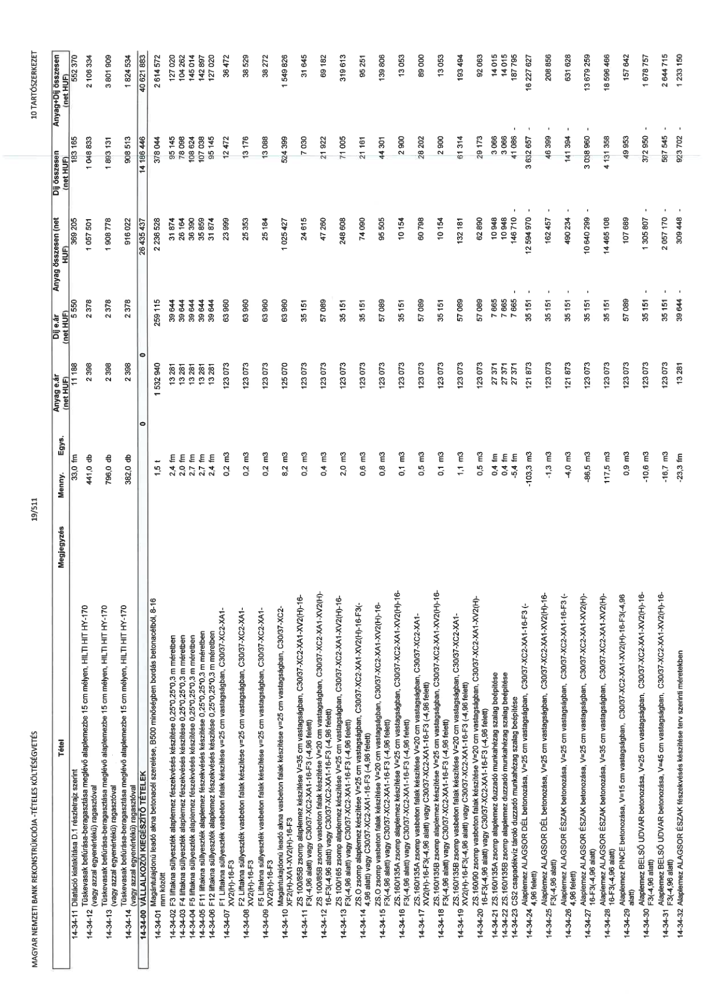

| Tétel | Megjegyzés | Menny. | Egys. | Anyag e.ár (net HUF) | Díj e.ár (net HUF) | Anyag összesen (net HUF) | Díj összesen (net HUF) | Anyag+Díj összesen (net HUF) |
|---|---|---|---|---|---|---|---|---|
| 14-34-11 Nyírócsapok BELSŐ UDVAR, PSB-14/150-2/400(60/80/160/75) | NaN | 58,0 | db | 14 024 | 3 964 | 813 392 | 229 912 | 1 043 304 |
| 14-34-12 Nyírócsapok BELSŐ UDVAR, PSB-14/150-2/300(60/80/160/-) | NaN | 102,0 | db | 9 941 | 3 964 | 1 013 982 | 404 328 | 1 418 310 |
| 14-34-13 Nyírócsapok BELSŐ UDVAR, PSB-14/150-2/400(60/80/160/60) | NaN | 30,0 | db | 14 024 | 3 964 | 420 720 | 118 920 | 539 640 |
| 14-34-14 Nyírócsapok ALAGSOR ÉSZAK, PSB-14/150-3/600(60/80/160/60) | NaN | 18,0 | db | 18 014 | 3 964 | 324 252 | 71 352 | 395 604 |
| 14-34-15 Nyírócsapok ALAGSOR ÉSZAK, PSB-14/150-3/900(60/80/160/-) | NaN | 80,0 | db | 23 234 | 3 964 | 1 858 720 | 317 120 | 2 175 840 |
| 14-34-16 ZS 100/85A zsomp zsaluzat alaplemezben, bennmaradó, perem és fészekképzésekkel | NaN | 4,0 | db | 16 352 | 67 220 | 65 408 | 268 880 | 334 288 |
| 14-34-17 ZS 100/85B zsomp zsaluzat alaplemezben, bennmaradó, perem és fészekképzésekkel | NaN | 2,0 | db | 16 352 | 67 220 | 32 704 | 134 440 | 167 144 |
| 14-34-18 ZS 100/165 zsomp zsaluzat alaplemezben, bennmaradó, perem és fészekképzésekkel | NaN | 4,0 | db | 16 352 | 67 220 | 65 408 | 268 880 | 334 288 |
| 14-34-19 ZS.O zsomp zsaluzat alaplemezben, bennmaradó, perem és fészekképzésekkel | NaN | 6,3 | db | 16 352 | 67 220 | 103 018 | 423 486 | 526 504 |
| 14-34-20 ZS.160/135A zsomp zsaluzat alaplemezben, bennmaradó, perem és fészekképzésekkel | NaN | 3,2 | db | 16 352 | 67 220 | 52 326 | 215 104 | 267 430 |
| 14-34-21 ZS.160/135B zsomp zsaluzat alaplemezben, bennmaradó, perem és fészekképzésekkel | NaN | 3,2 | db | 16 352 | 67 220 | 52 326 | 215 104 | 267 430 |
| 14-34-22 ZS.160/135C zsomp zsaluzat alaplemezben, bennmaradó, perem és fészekképzésekkel | NaN | 3,2 | db | 16 352 | 67 220 | 52 326 | 215 104 | 267 430 |
| 14-34-23 ZS.160/165 zsomp zsaluzat alaplemezben, bennmaradó, perem és fészekképzésekkel | NaN | 3,2 | db | 16 352 | 67 220 | 52 326 | 215 104 | 267 430 |
| 14-34-24 ZS.160/90 zsomp zsaluzat alaplemezben, bennmaradó, perem és fészekképzésekkel | NaN | 3,2 | db | 16 352 | 67 220 | 52 326 | 215 104 | 267 430 |
| 14-34-25 CS1 csapadékvíz tároló zsaluzat alaplemezben, bennmaradó, perem és fészekképzésekkel | NaN | 8,2 | db | 16 352 | 67 220 | 134 086 | 551 204 | 685 290 |
| 14-34-26 ALAGSOR ÉSZAK alaplemez peremzsaluzat, h=10-25cm | NaN | 10,2 | m2 | 8 221 | 10 655 | 83 854 | 108 681 | 192 535 |
| 14-34-27 ALAGSOR ÉSZAK alaplemez peremzsaluzat, h=25-45cm | NaN | 9,4 | m2 | 8 221 | 10 655 | 77 277 | 100 157 | 177 434 |
| 14-34-28 ALAGSOR DÉL alaplemez peremzsaluzat, h=10-25cm | NaN | 16,1 | m2 | 8 221 | 10 655 | 132 358 | 171 546 | 303 904 |
| 14-34-29 BELSŐ UDVAR alaplemez peremzsaluzat, h=25-45cm | NaN | 30,8 | m2 | 8 221 | 10 655 | 253 207 | 328 174 | 581 381 |
| 14-34-30 BELSŐ UDVAR alaplemez peremzsaluzat, h=45-80cm | NaN | 22,5 | m2 | 10 401 | 10 655 | 234 023 | 239 738 | 473 761 |
| 14-34-31 Szigetelésvezető fal ALAGSOR ÉSZAK zsaluzat 2 rtg. fal zsalukkal | NaN | 70,6 | m2 | 8 221 | 16 575 | 580 403 | 1 170 195 | 1 750 598 |
| 14-34-32 Szigetelésvezető fal JET oszlopba vésett ALAGSOR ÉSZAK 1 rtg. zsalukkal | NaN | 12,1 | m2 | 3 711 | 9 945 | 44 903 | 120 335 | 165 238 |
| 14-34-33 Szigetelésvezető fal függőleges ALAGSOR DÉL, zsaluzat 2 rtg. fal zsalukkal | NaN | 58,4 | m2 | 8 221 | 16 575 | 480 106 | 967 980 | 1 448 086 |
| 14-34-34 Szigetelésvezető fal függőleges BELSŐ UDVAR, zsaluzat 2 rtg. fal zsalukkal | NaN | 173,3 | m2 | 8 221 | 16 575 | 1 424 699 | 2 872 448 | 4 297 147 |
| 14-34-35 Szigetelésvezető falak pillér/fészek zsaluzat, h<25cm, ALAGSOR ÉSZAK | NaN | 13,6 | fm | 2 136 | 11 839 | 29 050 | 161 010 | 190 060 |
| 14-34-36 Szigetelésvezető falak pillér/fészek zsaluzat, h<25cm, ALAGSOR DÉL | NaN | 44,3 | fm | 2 136 | 11 839 | 94 625 | 524 468 | 619 093 |
| 14-34-37 Szigetelésvezető falak pillér/fészek zsaluzat, h<25cm, BELSŐ UDVAR | NaN | 103,4 | fm | 2 136 | 11 839 | 220 862 | 1 224 153 | 1 445 015 |
| 14-34-38 Alaplemez ALAGSOR DÉL betonacél szerelés 12 mm átmérőig | NaN | 4,2 | t | 512 875 | 249 762 | 2 154 075 | 1 049 000 | 3 203 075 |
| 14-34-39 Alaplemez ALAGSOR DÉL betonacél szerelés 12 mm feletti átmérőben | NaN | 27,3 | t | 492 875 | 216 460 | 13 455 488 | 5 909 358 | 19 364 846 |
